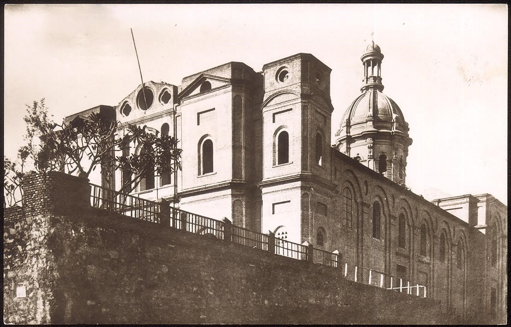

The Church, under Marian invocation of Our Lady of the Incarnation, is located on one of the city's hills, known as Volo Cué; It is also called "Iglesia andariega" because it had the peculiarity of having several settlements before its current location.
This building was designed by the Italian architect Juan Colombo in 1893 and he directed the works until his death in 1902. During the Chaco War (1932-1935) the La Encarnación Temple was used as blood hospital.
Their different locations were:
First Settlement- Years: 1539-1543, it was located in the Barranca de la Bahía de Asunción, built by Captain Domingo Martínez de Irala.
Second Settlement- Years: 1543-1697, it was located in the same place where the Casa Fuerte was.
Third Settlement- Years: 1697-1797, it was located on the ruins of the Chapel of Santa Lucía.
Fourth Settlement- Years: 1797-1818, it was in the property included in the streets La Encarnación (Today Calle 15 de Agosto) and Presbítero Hernández (Today Calle Palma).
Fifth Settlement- Years: 1818-1889 due to the collapse of the fourth location, it had to be moved to the Dominican Convent, since this religious order was expelled from the country by Dr. Gaspar Rodríguez de Francia, at that time the church underwent repairs, Dr. Francia dedicated it to Parish after expelling the Dominicans and seizing their property, demolishing the old Church and handing over the Santo Domingo Church to that effect. In 1842, President Don Carlos Antonio López built an adjacent elementary school. The Church of La Encarnación served as a Cathedral during the years 1842-1851.
Sixth Settlement- Years: 1889 to the present, located on the hill above Eduardo Víctor Haedo streets (former Pilcomayo street) 14 de Mayo and Humaitá.
From the point of view of applied technology: The building does not have the characteristics of the other churches in Paraguay, and cannot be framed within a defined style, and its completion has not been completed. The construction is Roman-Corinthian style, similar to that of European cathedrals.
For its construction, materials from our country were used: Stones for foundations, bricks and ceramic tiles for the large walls and roof, wood for braces, among others. The walls are plastered inside, but not outside the building.
Bibliography:
Gutiérrez Ramón, Arch. Urban and Architectural Evolution of Paraguay-1537-1911. Comuneros Editions Asunción Paraguay. Pages 214-215
www.mopc.gov.py
National Secretariat of Culture (SNC) -General Directorate of Cultural Heritage Heritage Registry Directorate-Cultural Heritage Registry Department
Municipality of Asunción-General Directorate of Urban Development-Directorate of Planning U.-Department of Cultural Heritage